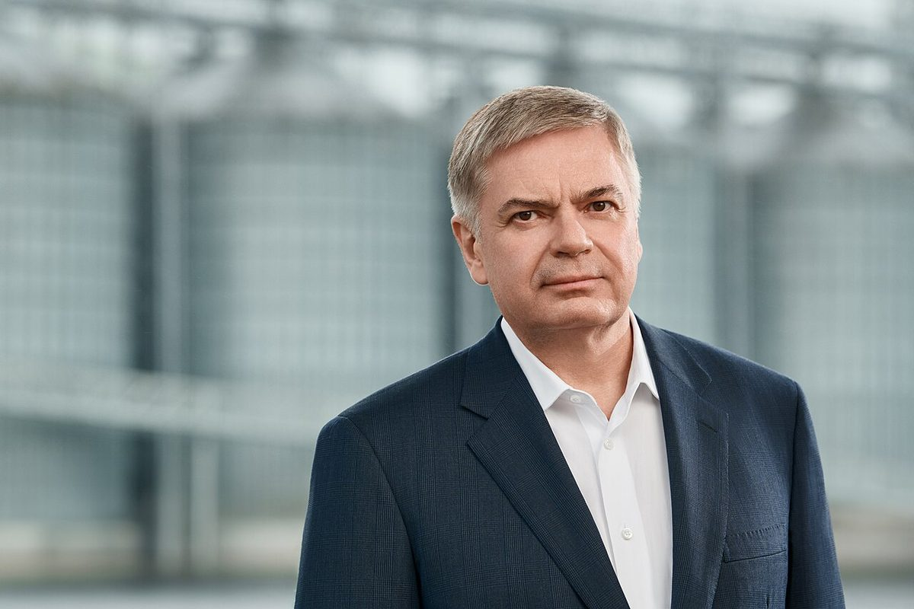

«Победы любят тишину»: Трефилов осадил Шишкарёва за обещание медалей Олимпиады-2028
Триумфатор Рио-2016 призвал не горячиться с прогнозами, пока чиновники лишь пытаются выбить wild card в Лос-Анджелес.

Бывший главный тренер женской сборной России по гандболу Евгений Трефилов скептически отнёсся к публичным обещаниям завоевать медали на Олимпийских играх 2028 года в Лос-Анджелесе. В воскресенье, 22 ноября 2026 года, мэтр отечественного тренерского цеха напомнил в интервью «Спорт-Экспрессу» старую истину: «Деньги любят тишину, и победы — тоже».
Заявление Трефилова стало прямой реакцией на слова председателя Высшего совета Федерации гандбола России (ФГР) Сергея Шишкарёва, который двумя днями ранее поклялся, что национальная команда гарантированно поднимется на пьедестал в июле 2028-го.
«Шансы всегда 50 на 50. Я бы так не горячился, — подчеркнул 71-летний Трефилов в беседе со «Спорт-Экспрессом». — Всё надо делать тихо. Как говорят, деньги любят тишину, и победы — тоже. Конечно, хочется постоянно видеть сборную на пьедестале. Это очень приятно и греет душу».

Разные взгляды со сцены кинотеатра
Заочной полемике предшествовала премьера документального фильма Николая Акелькина «Чудо в Рио», прошедшая в Москве в пятницу, 20 ноября 2026 года. Картина посвящена легендарному золоту Олимпиады-2016 в Рио-де-Жанейро: тогда подопечные Трефилова в драматичном овертайме полуфинала вырвали победу у Норвегии благодаря хладнокровным семиметровым Екатерины Ильиной, а в финале сломили сопротивление Франции — 22:19.
Выступая на показе, Шишкарёв уверенно анонсировал триумфальное возвращение: «Есть конкретная дата — июль 2028 года, город Лос-Анджелес. Я вам обещаю, что сборная России будет стоять там на пьедестале».
Трефилов, стоя на той же сцене, предпочёл остудить победный пафос: «Мы много говорим и мало делаем. Победа — это миг. После победы нужно снова идти в зал ради ещё одной секунды триумфа, — напомнил специалист. — Хочется, чтобы к гандболу относились немного иначе. Девчонки своими результатами на Олимпиадах доказали, что гандбол для России — далеко не последний вид спорта».
Тернистый путь в Лос-Анджелес
После золота Рио-2016 российские гандболистки завоевали серебро на Играх-2020 в Токио, однако не провели ни одного олимпийского матча с августа 2021 года из-за отстранения от турниров под эгидой IHF и EHF, введённого в 2022 году. Сами Игры в Лос-Анджелесе пройдут с 14 по 30 июля 2028 года, и времени на отбор остаётся катастрофически мало.
Единственным реальным мостом в олимпийскую квалификацию для сборной России остаётся женский чемпионат мира 2027 года. Шишкарёв подтвердил намерение провести переговоры с президентом Международной федерации гандбола (IHF) Хассаном Мустафой (Hassan Moustafa) о предоставлении российской команде специального приглашения (wild card), которое позволит включиться в борьбу за путёвки на Олимпиаду-2028.